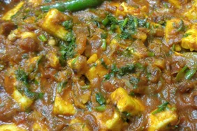

Paneer Butter Masala

- ½ cup vegetable oil
- ½ pound paneer, cut into 1/2-inch cubes
- 2 tablespoons butter
- 2 onions, finely chopped
- 1 teaspoon ginger paste
- 1 teaspoon garlic paste
- 1 tablespoon ground cashews
- 1 teaspoon ground red chiles
- ½ teaspoon ground cumin
- ½ teaspoon ground coriander
- ½ teaspoon garam masala
- 1 (8 ounce) can tomato sauce
- ½ cup half-and-half
- ½ cup milk
- ½ teaspoon white sugar
Instructions To Cook
- Heat oil in a large skillet over medium heat.
- Fry paneer in batches until golden, about 5 minutes. Transfer the fried paneer to a paper towel-lined plate to drain, retaining the vegetable oil in the skillet.
- Melt butter in the same skillet over medium heat.
- Cook and stir the onions until golden brown, about 10 minutes.
- Add ginger paste and garlic paste; continue to cook until fragrant, about 1 minute more.
- Stir in cashews, ground red chiles, cumin, coriander, and garam masala into the onion mixture. Cook and stir for 1 minute.
- Add tomato sauce, half-and-half, milk, sugar, and salt into the spice mixture; simmer until thickened, about 5 minutes.
- Reduce heat to low, then add the fried paneer and simmer until heated through, about 5 minutes more.